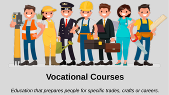

Explore Your Vocational Options
Types of Vocational Courses:
- Diploma in Nursing: Prepares students for roles such as Registered Nurse (RN) by covering subjects like anatomy, physiology, patient care, and medical ethics.
- Diploma in ITI (Industrial Training Institute) Courses: Offers training in various trades such as electrician, plumber, mechanic, and welder, providing practical skills required in the industrial sector.
- Certificate in Culinary Arts: Focuses on cooking techniques, food safety, menu planning, and kitchen management, preparing students for careers as chefs or kitchen supervisors.
- Certificate in Graphic Design: Teaches design principles, software proficiency (like Adobe Creative Suite), and creative techniques to prepare students for roles in digital and print media.
- Diploma in Automotive Technology: Covers vehicle maintenance, repair, diagnostics, and the latest automotive technologies, preparing students for careers as automotive technicians.
- Certificate in Cosmetology: Provides training in hair styling, makeup application, skincare, and salon management, preparing students for careers as cosmetologists or salon managers.
- Diploma in Electrician Training: Focuses on electrical systems, wiring, safety protocols, and troubleshooting, preparing students for careers as licensed electricians.
- Certificate in Digital Marketing: Covers SEO, social media marketing, content creation, and analytics, preparing students for roles in online marketing and brand management.
- Diploma in HVAC (Heating, Ventilation, and Air Conditioning): Teaches installation, maintenance, and repair of HVAC systems, preparing students for careers as HVAC technicians.
- Certificate in Welding: Provides training in various welding techniques, safety practices, and metal fabrication, preparing students for careers in manufacturing and construction.
Skills Needed:
- Practical Skills for the Specific Trade: Hands-on abilities related to the chosen vocational field, such as mechanical skills for automotive technology or design skills for graphic design.
- Attention to Detail: Precision is crucial in roles like nursing, electrical work, and culinary arts to ensure quality and safety.
- Problem-Solving: Ability to identify issues and implement effective solutions, essential in technical and service-oriented roles.
- Technical Proficiency: Familiarity with relevant tools, equipment, and software specific to the trade.
- Time Management: Efficiently managing tasks and deadlines to maintain productivity and meet project requirements.
- Communication Skills: Clear communication with colleagues, clients, and supervisors is vital in most vocational fields.
- Physical Stamina: Many vocational roles require physical endurance and the ability to perform tasks that may be physically demanding.
- Adaptability: Being open to learning new techniques and adapting to changes in technology or industry standards.
- Customer Service Skills: Especially important in fields like cosmetology and digital marketing, where interaction with clients is frequent.
- Safety Awareness: Understanding and adhering to safety protocols to prevent accidents and ensure a safe working environment.
Job Opportunities:
- Healthcare Assistant: Provides support to nurses and other healthcare professionals, assisting with patient care and administrative tasks.
- Technician: Specializes in areas such as automotive, electrical, or HVAC, performing maintenance, repairs, and installations.
- Culinary Chef: Prepares and cooks food in restaurants, hotels, or catering services, often specializing in specific cuisines or techniques.
- Graphic Designer: Creates visual content for advertisements, websites, magazines, and other media using design software.
- Electrician: Installs, maintains, and repairs electrical systems in residential, commercial, and industrial settings.
- Digital Marketer: Develops and implements online marketing strategies, including social media campaigns, SEO, and content marketing.
- Cosmetologist: Provides beauty services such as hair styling, makeup application, and skincare treatments in salons or as freelancers.
- HVAC Technician: Installs and services heating, ventilation, and air conditioning systems in buildings.
- Welder: Joins metal parts together using various welding techniques, working in manufacturing, construction, or repair industries.
- Automotive Technician: Diagnoses and repairs vehicle issues, ensuring cars are safe and functioning properly.
Career Growth:
- Advanced Certifications: Obtaining additional certifications or licenses can lead to specialized roles and higher pay.
- Supervisory Roles: With experience, professionals can move into supervisory or managerial positions, overseeing teams and projects.
- Entrepreneurship: Many vocational professionals choose to start their own businesses, such as opening a salon, launching a digital marketing agency, or establishing an auto repair shop.
- Specialization: Focusing on a niche area within the trade can lead to expertise and demand in specific markets, such as specializing in eco-friendly welding techniques or advanced culinary arts.
- Teaching and Training: Experienced professionals can transition into roles as instructors or trainers, sharing their knowledge with the next generation of workers.
- Cross-Training: Learning additional trades or complementary skills can open up new career pathways and increase job security.
Further Education Options:
- Associate Degrees: Offered by community colleges, these degrees provide more comprehensive education in a vocational field.
- Bachelor’s Degrees: For those looking to advance further, bachelor’s degrees in related fields can provide broader knowledge and open doors to higher-level positions.
- Online Courses and Certifications: Flexible learning options that allow professionals to continue their education while working.
- Apprenticeships: Combining on-the-job training with classroom instruction to gain advanced skills and experience.
Professional Organizations:
- National Vocational Education Association (NVEA): Supports vocational education professionals with resources, training, and advocacy.
- American Culinary Federation (ACF): Offers certifications, networking, and professional development for culinary professionals.
- International Association of Electrical Inspectors (IAEI): Provides standards, training, and networking for electricians and electrical inspectors.
- Graphic Artists Guild: Advocates for the rights of graphic artists and provides resources for professional development.
- Digital Marketing Institute (DMI): Offers certifications and resources for digital marketers to stay updated with industry trends.
- National Association of Home Builders (NAHB): Provides resources and networking for HVAC technicians and other home service professionals.
Back to Main Menu